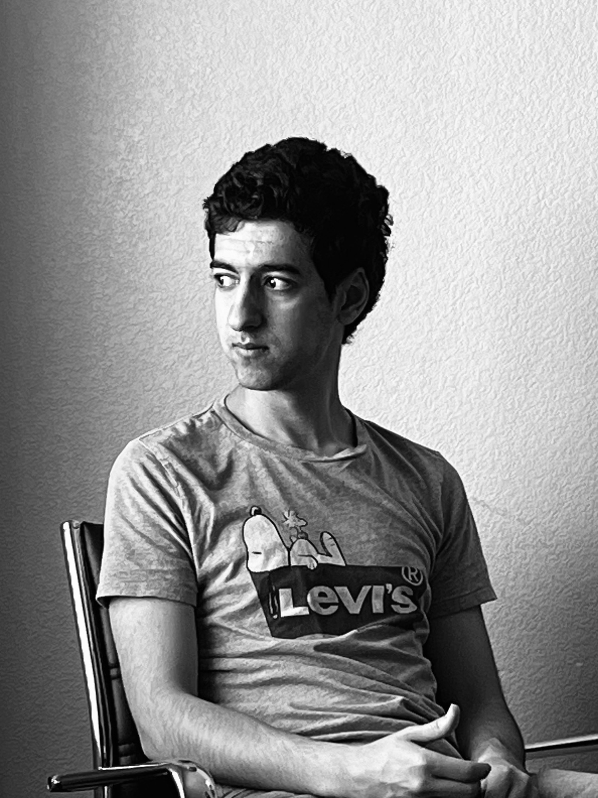
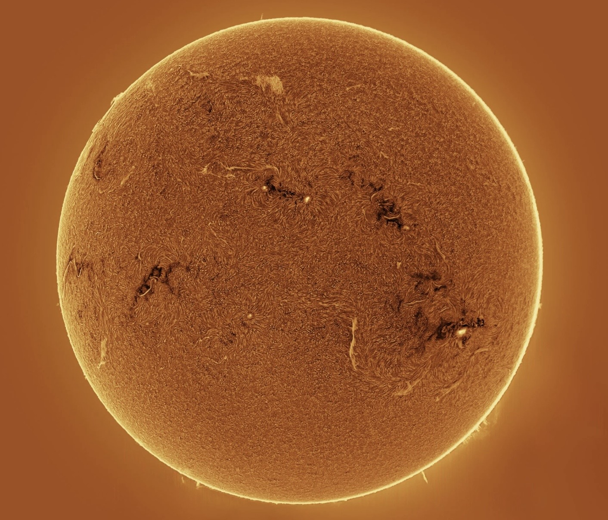
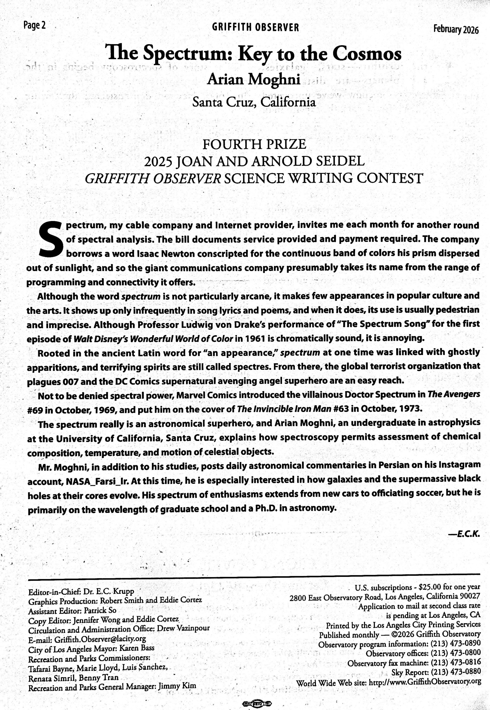
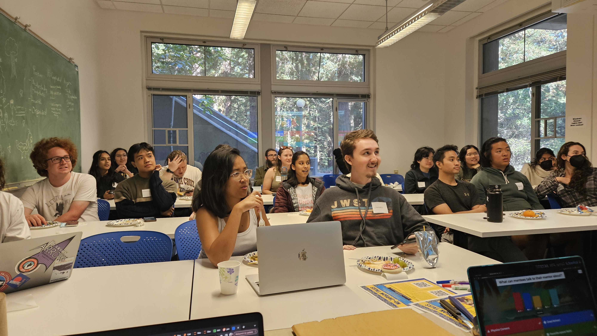
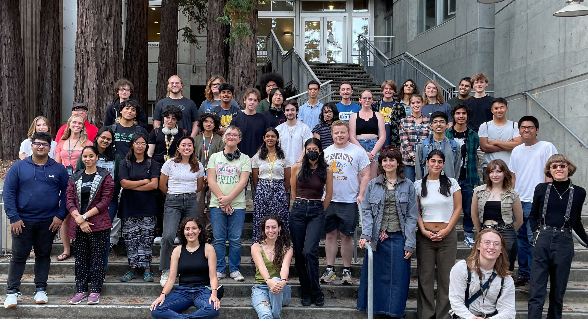
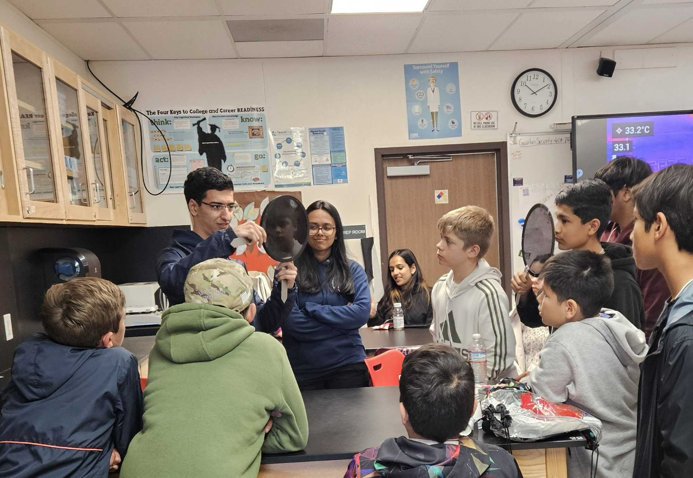
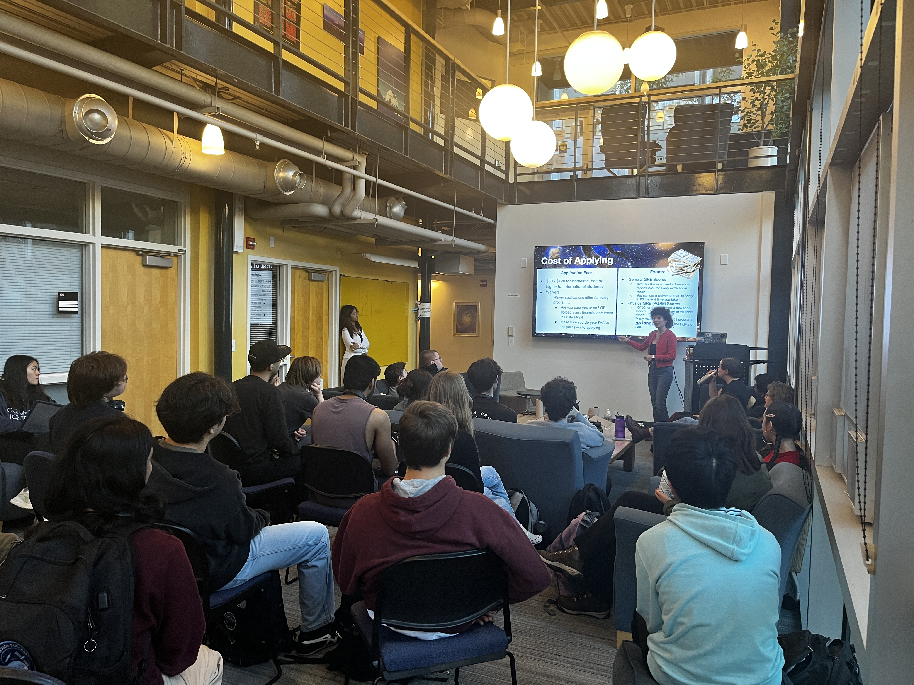

Outreach
 NASA / Reid Wiseman / Artemis II
NASA / Reid Wiseman / Artemis II
Look at her. Just look at her. Think of the mountains. Every mountain we've ever climbed is a wrinkle on her skin. Every deep ocean we have feared and crossed and drowned in is just a shallow layer below her skin. Every civilization we've built, every empire that rose to power and collapsed, from Romans and Babylonians to Mongols and even the ones lost in history, all of it happened here in the last second of her long, indifferent lifetime. And yet, she has not been indifferent. Before we could ask, she gave us food and fruit to eat. She gave us water to drink and air to breathe. She gave us a world with everything we would ever need.
Somewhere in some pixels a child is being born. In another, a man is dying alone in a room. Somewhere, a couple is falling in love, and somewhere else, a refugee is staring at a horizon. Somewhere, a scientist is on the edge of a discovery. Somewhere, someone is laughing so hard they can't breathe. And, somewhere, someone is crying about losing a loved one. All of it. All of it is happening here, on this mote of dust in the vastness of space, on a planet that from the right distance fits behind your thumb.
What does it mean to wage a war on one another? To become the temporary master of a fraction of a dot? Think about it. On this fragile, small, spinning thing, we drew lines in the soil and said, "This side is mine, and you are not welcome here." We gave names to the rivers and turned the names into reasons for killing one another. We used cloth to make flags and bled for the cloth as if the cloth could love us back.
She has watched it all. Century after century. Every burning village. The rise and fall of every empire. And not one of those empires took the sky with them when they fell. Not one of those borders outlasted the river it was drawn next to. Everything we claimed returned to her, and she generously gave it, unnamed and unheld, to whoever came next. She has always known something that we keep having to relearn: that nothing here was ever ours to keep. We were always just guests.
Photo: NASA / Reid Wiseman, Artemis II · Inspired by Carl Sagan's legendary Pale Blue Dot
On Purpose
Why I Do This

I come from a humble background and grew up in Iran. Despite being constantly in the news, Iranians are some of the kindest and most hard-working people I have met. Growing up in Iran, I was really good at math, and soon, the documentaries of NASA, their missions to the moon, and astronomy newspapers all pushed me enough to want to work at NASA. I did not fully understand what that meant yet, but I knew Iran was not the place where that dream could become true. So I left. I was just a young teenager, but I was soon tackled by one problem after another. A new language I did not speak. Sanctions so severe that crumbled every bit of our savings. A new system I had to learn on my own because my parents' experience in living on the other side of the planet was no longer relevant. I began to see the problems in our systems. If one is not born into an English-speaking country, they immediately lose access to vast amounts of information about science, history, technology (and more) before they ever open a textbook. Coming from a low-income background is a whole world of its own kind. Are you struggling in classes? Too bad because others are only willing to help you for $30 an hour. Do you have to take the SAT? Good luck spending hundreds or even thousands of dollars on books, guides, and tutors.
Think about the girl in the villages of Pakistan getting up every day before dawn and walking two hours each way to sit in a classroom with no books. Think of the boy in sub-Saharan Africa who is just as bright as any student at Harvard but is too busy trying to survive. Our lives... our dreams... the ceiling of what we are allowed to become... They are all determined from the conditions of our birth. A wrong side of a border. A wrong mother tongue. A wrong number in a bank account. A wrong shade of skin. Things you never chose. Things you could never change. Things that will do more to determine your future than any late night study session. For some, there are already walls in place --- before they even learn how to walk.
What's worse is that the system then turns around and says that success is purely the result of hard work. "See the successful immigrant? See the poor kid who got the full-ride scholarship? It's all possible." But, is one open door in a burning building a rescue? We are losing people who could have cured diseases. People who could have written great books. People who could have made new discoveries. People who could have changed lives. But they were born on the wrong side of a border, or a language, or a number in a bank account. We are losing everything they could have given us.
Science Communication
NASA Farsi IR

Image from one of my posts on @nasa_farsi_ir, explaining how the absorption features we detect could arise from both gases in the interstellar medium and the atmosphere of stars themselves, plus how we can distinguish between the two. Photo: Arturo Buenrostro, AAPOD2
When I was growing up in Iran, I wanted to learn about astronomy, but almost everything was in English, which I did not speak back then. So, when I learned English in the U.S., I created the @nasa_farsi_ir Instagram account where I write daily posts and articles about new research findings and physics and astronomy fundamentals in Farsi. Last year, before Iran's internet shut downs, my posts got over 500,000 views across Instagram and LinkedIn.
Science Writing · Published February 2026
The Spectrum: Key to the Cosmos

First page of the Griffith Observer magazine, February 2026. My article "The Spectrum: Key to the Cosmos" appears in this issue.
In March 2025, I received 4th Prize in the Joan and Arnold Seidel Griffith Observer Science Writing Contest, the only undergraduate among international faculty and professional science writers to be recognized. For the competition, the selection committee at the Griffith Observatory in Los Angeles, CA, selected the "best articles in astronomy, astrophysics, and space science" for stimulating "the flow of information between scientists, science writers, and the public." The article was published in the Griffith Observer magazine in February 2026.
The piece uses the spectrum as a way to explain how astronomers are able to learn so much about our universe: the chemical composition of a galaxy, the temperature of a star, the speed of a gas cloud moving through space. The spectrum is how we know almost everything we know about our universe. The article was written for anyone curious about how that works without assuming any previous knowledge.
Mentoring
Mentoring

A networking event for undergraduates to get to meet graduate students in the physics and astronomy departments. We hosted the event through the UC Santa Cruz Physics Mentoring Program.
Access is unequal in ways that are easy to overlook from the inside. A student who does not know what an REU is cannot apply for one. A student who has never met a working physicist does not know what that path looks like. A student navigating a college application without guidance can lose an opportunity not because of their ability but because of the paperwork. These are solvable problems.
As the Program Lead of the UC Santa Cruz Physics Mentoring Program, I connected 96 mentors and mentees across physics and astrophysics to help students get support for graduate school applications, summer research programs, coursework, and anything else they need. I host networking events that put students in direct contact with experienced graduate students and undergrauates.
I also work with high school students from underserved communities on physics, college applications, and scholarships. One mentee received a full-ride to the University of Pennsylvania. Another was accepted to Case Western Reserve University as an international student. I also led a workshop at Harbor High School in Santa Cruz to support students with college applications.
Additionally, I volunteer as a tutor with the Learn To Be Organization, teaching physics, calculus, algebra 2, and geometry to middle and high school students from underserved communities. At UC Santa Cruz, I served as a research peer mentor for four first-year undergraduates, guiding them through data analysis, scientific writing, and presenting findings from HST and JWST spectra.
Connected 96 mentors and mentees across physics and astrophysics
Mentor high school students from underserved communities
Teach Calculus, Physics, Algebra 2, and Geometry for students from underprivileged backgrounds
Guided 4 first-year undergraduates through HST and JWST data analysis
Leadership & Public Talks
Making Physics Feel Like It Belongs to Everyone

UC Santa Cruz Society of Physics Students.
As the President of the UC Santa Cruz Society of Physics Students (SPS), I have worked to make the department feel more supportive and inclusive. I led the annual research showcase connecting undergraduates with physics and astronomy faculty, which helped many students get their first research experience. I also ran graduate school and REU workshops, in addition to events centered around community-building, like stargazing events and physics graduation picnic. I also took our outreach beyond UC Santa Cruz, visiting community college and middle school students to talk about physics and astronomy to get them interested in science.
I even returned to my high school in Pleasanton, California, to share my research on galaxy evolution. I spoke with students about what scientific research is actually like and encouraged those interested in physics and astrophysics to pursue their curiosity rather than let the stereotype of the "genius scientist" portrayed in popular media discourage them from pursuing science.

Physics outreach with middle school students.

Hosted a graduate school workshop for undergraduates at UC Santa Cruz through the Society of Physics Students.
They were always meant to belong to all of us.